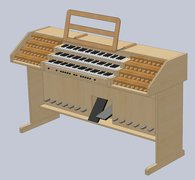
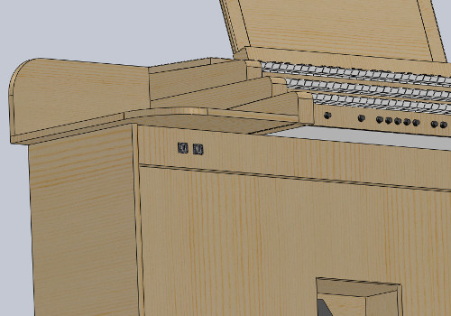
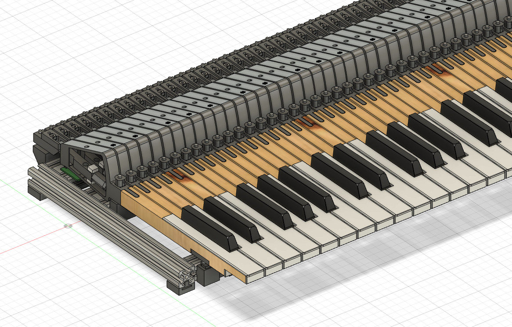
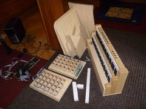
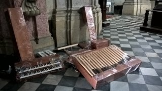
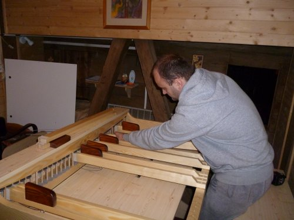

Dienstleistungen
- Entwurf und Realisierung elektronischer Systeme für Pfeifenorgeln, einschließlich MIDI-Elektronik und kundenspezifischer MIDI-Platinen.
- Umbau pneumatischer Pfeifenorgeln auf elektrische Traktur, einschließlich Fertigung kundenspezifischer elektropneumatischer Komponenten.
- Nachrüstung älterer Orgelspieltische, Keyboards und Pedalboards. MIDI-Umbauten.
- Wir bieten 3D-Visualisierungen vor der Realisierung kundenspezifischer Spieltische und Komponenten.





